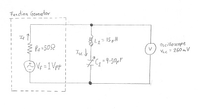
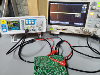

This is part of my "lab report" while I was studying with the book "The Electronics of Radio". Overview and list of all lab reports.
Tuned to the lowest voltage, which is at resonance of the series LC circuit, the measured voltage is 260mV.

To calculate the resistance of the LC circuit one needs to realize that the internal circuit of the function generator has a resistance of 50 Ohms. [Thanks to Nick WA5BDU for explaining this fact to me]. Seeing that we have the following circuit it is easy to do the calculation.

$$I_f={V_F \over R_f + R_{LC}}$$
$$I_{LC}={V_{LC} \over R_{LC}}$$
Bonus: Calculating capacitance at resonance.
I measured the highest voltage of 440mV. This was again at the resonance frequency (i.e. variable capacitor at 34pF).

This time our circuit has three resistors in series: the internal resistance of the function generator \(R_f\) with 50 Ohms, the internal resistance of the inductor and capacitor \(R_{LC}\) with 17.57 Ohms, and the resistance of the load \(R_L\) with 50 ohms.
$$ {V_L \over R_L} = {V_F \over {R_F + R_{LC} + R_L}}$$
$$ {V_L \over 50Ω} = {1V \over {50Ω + 17.57Ω +50Ω}}$$
$$ {V_L} = {50 \over 117.57} = {\underline {\underline {0.425V}}}$$


{kind=link}
{kind=link}
{kind=link}
{kind=link}